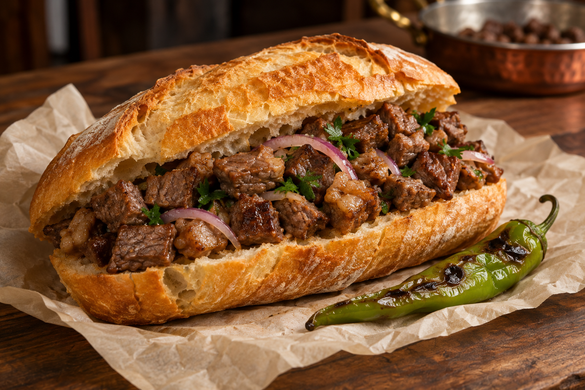
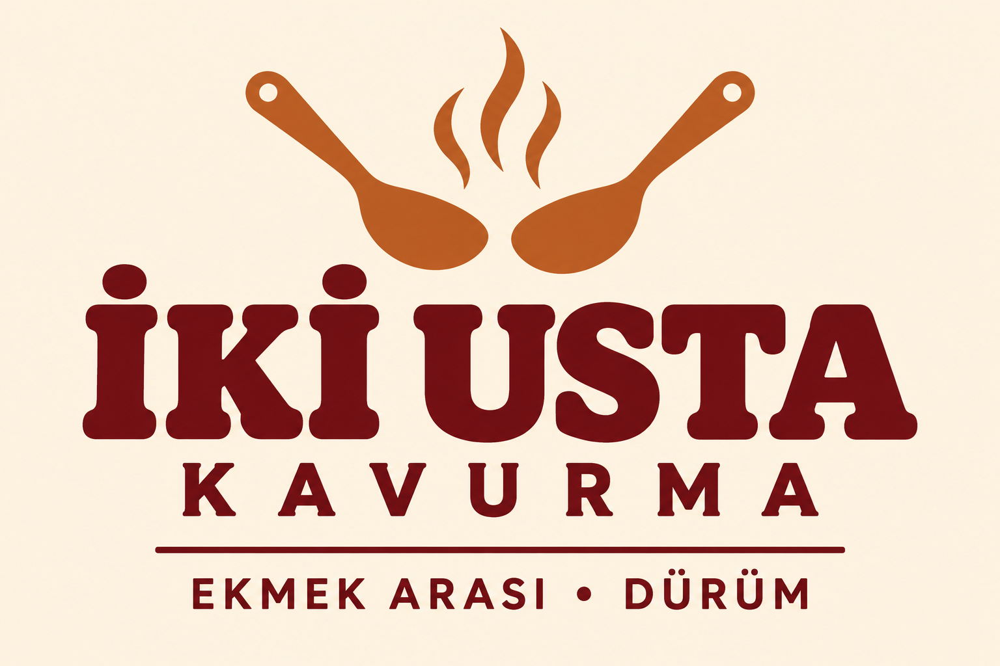

01KLASİK
Ekmek Arası Kavurma
Küp dana kavurma, soğan, maydanoz ve biber. Ekmeğin arasında tam kararında.
100 g pişmiş kavurma370 ₺
İKİ USTA. BİR LEZZET.
İşimiz belli: kavurma. İster çıtır ekmeğin arasında, ister sıcacık lavaşta. Fazla söze gerek yok, lezzete yer var.


İKİ USTA. AYNI TEZGÂH.BİZİM DÜKKÂNIN FİKRİ
İki Usta, iki ortağın aynı tezgâhta buluşma fikrinden doğdu. Büyük bir menü yerine, bildiği işi özenle yapan küçük bir mahalle dükkânı hayal ettik.
Emek’te öğle arasında uğrayacağın, iş çıkışı ekmek arasını alıp yoluna devam edeceğin bir yer. Bizim hikâyemiz böyle başlasın istedik.
MAHALLEDE GÖRÜŞÜRÜZ
Tezgâhın yeri hazırlanıyor.
Açık adres ve çalışma saatleri açılışla birlikte burada olacak.
Şematik bölge görselidir; dükkân konumunu göstermez.
İSTER EKMEK ARASI, İSTER DÜRÜM.